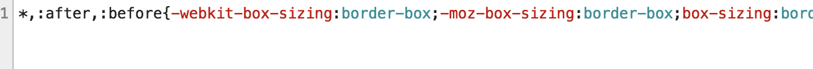
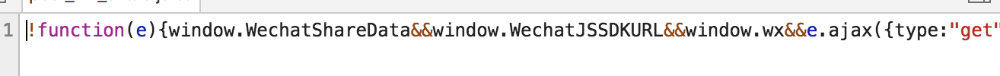
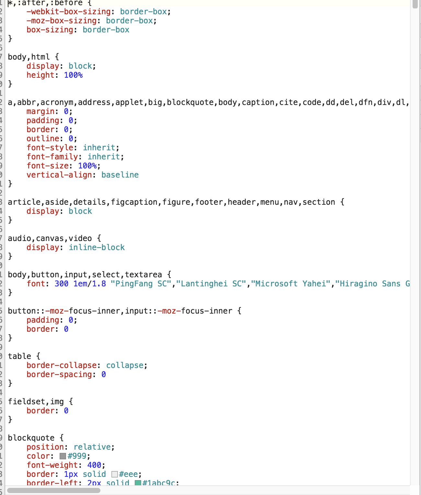
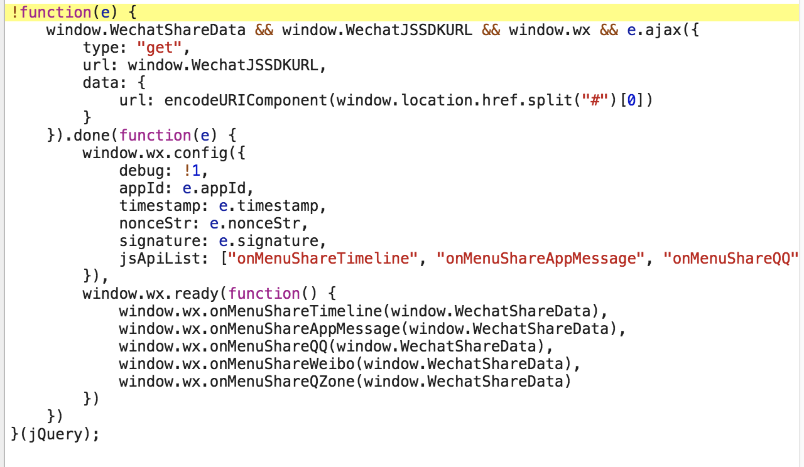
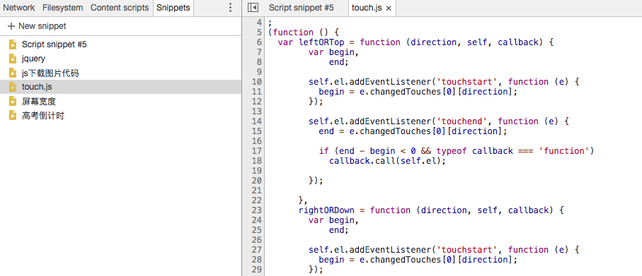
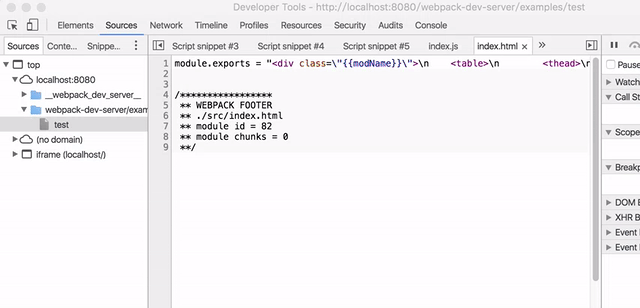
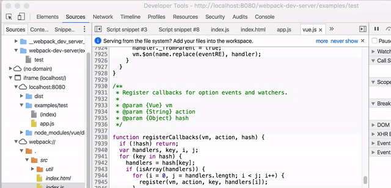

chrome下调试小技巧（一）
chrome下调试小技巧（一）
1、快速格式化线上压缩的js和css
我们通常看线上的js或者css都是这样的


通过在sources下的{}，点击即可格式化代码很方便


2、在浏览器中储存你的代码段
其实chrome中也是可以储存我们自己的代码的，如果不想每次都粘贴在控制台中或者临时想写些什么，那么sources中的Sinppets将是你的一个很好的选择，
Sinppets中你可以新建很多个不同的代码段，跟文本一样，可以写一些文字或者代码，可以command+s保存，如果你写的是js代码一类的，可以直接右键你的Sinppets
文件名称，点击Run，即可执行你的代码，也可以右键文件Save as保存文件到本地。

3、快速定位到指定的文件或者文件中的方法
ctrl+p 项目中定位文件，以下查找VueJS库文件：

ctrl+shif+o 文件中定位成员函数，以下定位到VueJS的nextTick接口：

暂且写这么多，network及短点什么的，估计大家都会用了，就不介绍了。
如果觉得我的文章对您有用，请随意打赏。


感谢您的阅读，本文由 李经纶 版权所有。如若转载，请注明出处：李经纶个人博客（https://lijinglun.com/2017/07/24/chrome_1/）